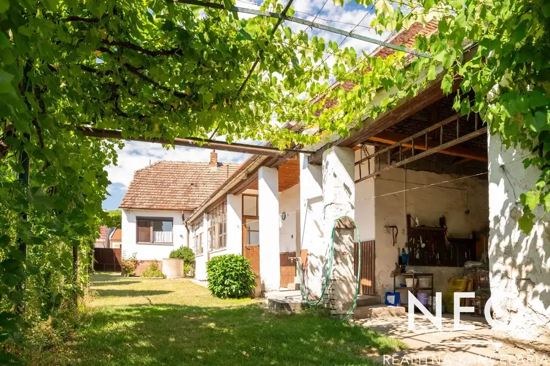
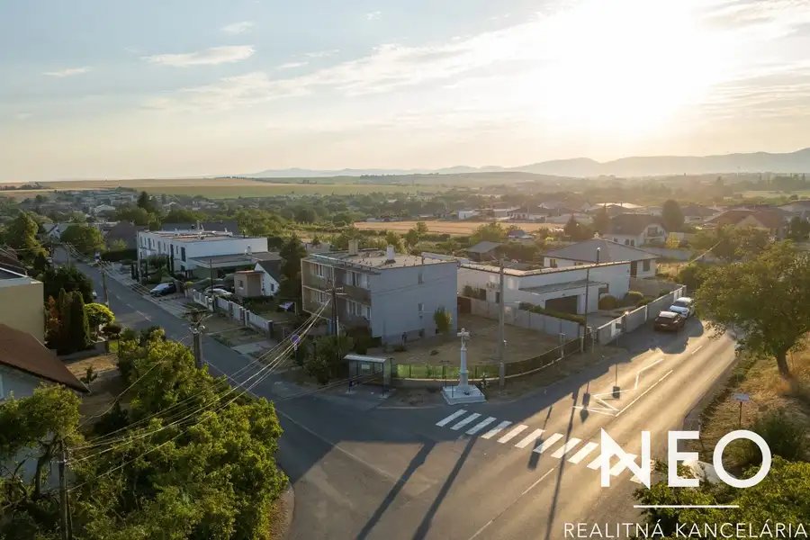
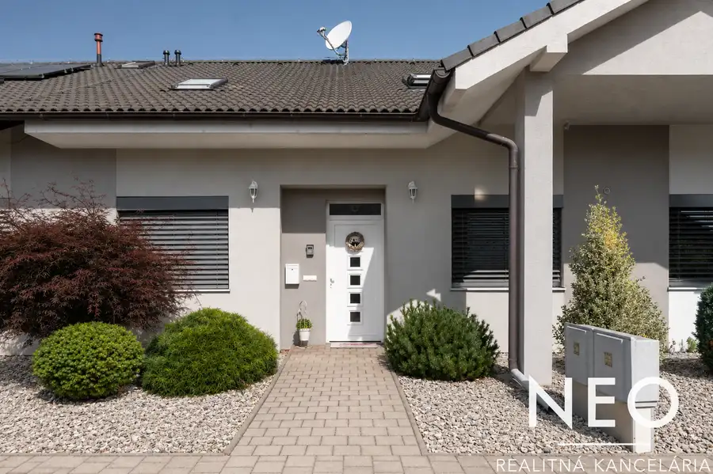
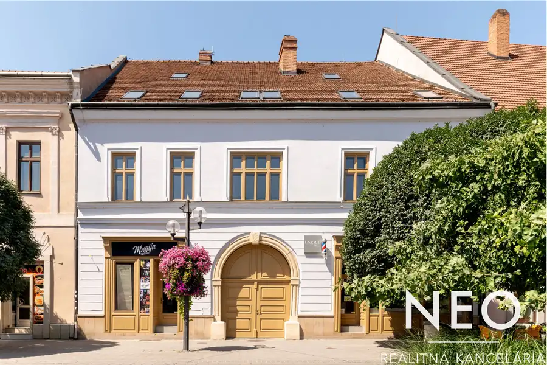
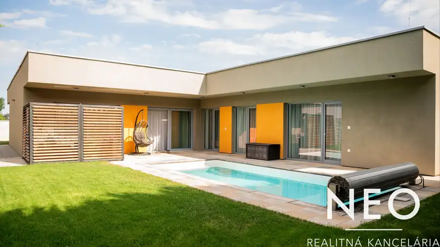
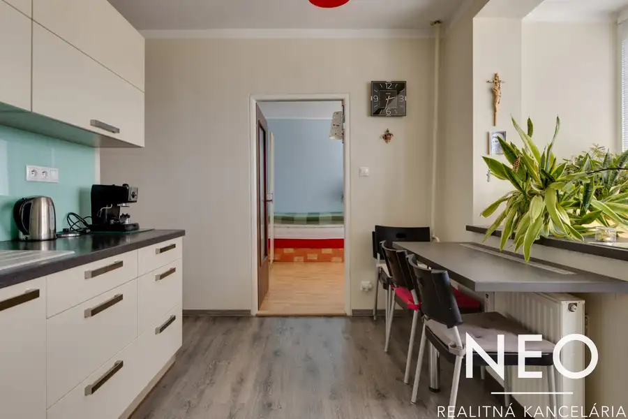
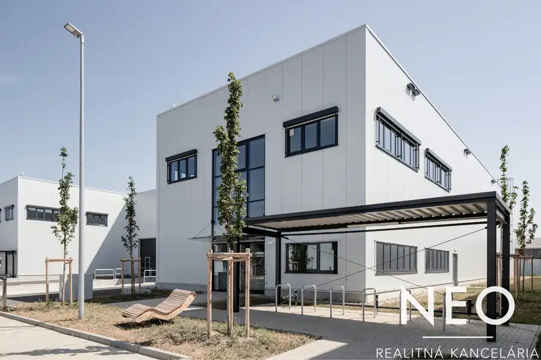
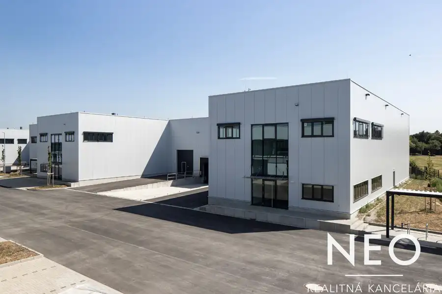
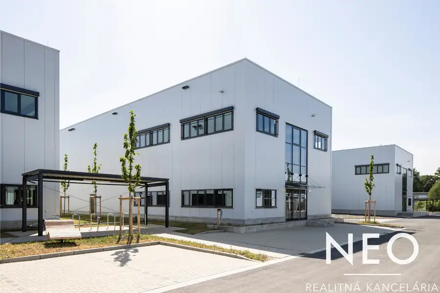
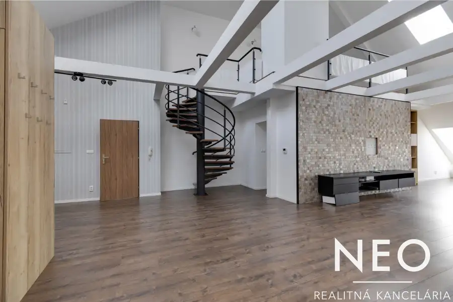

Aktuálna ponuka
Nehnuteľnosti, ktoré ponúkam
10 nehnuteľností na predaj a prenájom. Vyberte typ, alebo napíšte lokalitu.
10 z 10 ponúk

DomNové10 145 000 €NEO | 4-izbový rodinný dom na 820 m² pozemku | Boleráz | Pripravený na rekonštrukciu Boleráz 125 m² NEO - 4-izbový rodinný dom na 820 m² pozemku | Lokalita Boleráz | Pripravený na rekonštrukciuNiektoré nehnuteľnosti ponúkajú hotové bývanie. Iné…
DomNové10 204 900 €NEO | Rodinný dom na 463 m² pozemku | Zvončín | Priestor pre nové možnosti Zvončín 216 m² Niektoré nehnuteľnosti ponúkajú pokojné bývanie. Iné ponúkajú priestor pre nové nápady. A práve do tej druhej kategórie patrí táto nehnuteľnosť vo…
Dom10 349 000 €NEO | Rodinný dom so zimnou terasou a garážou | Zeleneč Zeleneč 226 m² Sú domy, v ktorých má každý svoje miesto. Priestor na spoločné chvíle, ale aj dostatok súkromia pre každého člena rodiny. A práve taký je tento…
Byt10 399 900 €NEO | Bývanie pod strechami historického centra | 3-izbový byt s galériou a terasou | 129 m² Trnava 3-izbový129 m²3. podlažie Niektoré byty ponúkajú viac než len miestnosti. Ponúkajú bývanie, ktoré si môžete prispôsobiť vlastnému spôsobu života.Realitná kancelária NEOREAL…
Dom10 629 000 €NEO | 5-izbový Rodinný dom s bazénom a garážou | Kamenáč – Trnava Trnava 205 m² Dom, v ktorom sa na komforte naozaj nešetrilo.Realitná kancelária NEOREAL Vám ponúka na predaj moderný 5-izbový rodinný dom v obľúbenej lokalite…
Byt10 189 900 €NEO | 3-izbový byt s panoramatickým výhľadom na Trnavu | 67 m² Trnava 3-izbový67 m²14. podlažie Výhľad, ktorý sa stane súčasťou vášho každého dňa.Realitná kancelária NEOREAL Vám ponúka na predaj 3-izbový byt s výmerou 67 m², situovaný na 13.…
Komerčné priestoryNové5 Cena dohodouNEO | Skladovo-obchodná jednotka 1 496 m² – CTPark Trnava North Trnava 1468 m² Ponúkame na prenájom novú skladovo-obchodnú jednotku s celkovou prenajímateľnou plochou 1 496 m² v pripravovanom projekte CTPark Trnava North na…
Komerčné priestory5 Cena dohodouNEO | 4 skladovo-obchodné jednotky po 1 477 m² – CTPark Trnava North Trnava 1477 m² Ponúkame na prenájom štyri samostatné skladovo-obchodné jednotky, každú s celkovou prenajímateľnou plochou 1 477 m², v pripravovanom projekte CTPark…
Komerčné priestory4 Cena dohodouNEO | Skladovo-obchodná jednotka 1 468 m² – CTPark Trnava North Trnava 1468 m² Ponúkame na prenájom novú skladovo-obchodnú jednotku s celkovou prenajímateľnou plochou 1 468 m² v pripravovanom projekte CTPark Trnava North na…
Byt10 549 900 €NEO | 4-izbový byt s otvorenou galériou, terasou a podkrovným priestorom | 190 m² Trnava 4-izbový250 m²3. podlažie Veľkorysý priestor, otvorená galéria, množstvo denného svetla a terasa s výhľadom ponad strechy historického centra. Tento 4-izbový byt zaujme nielen…Tomuto výberu zatiaľ nezodpovedá žiadna ponuka. Napíšte mi, čo hľadáte.